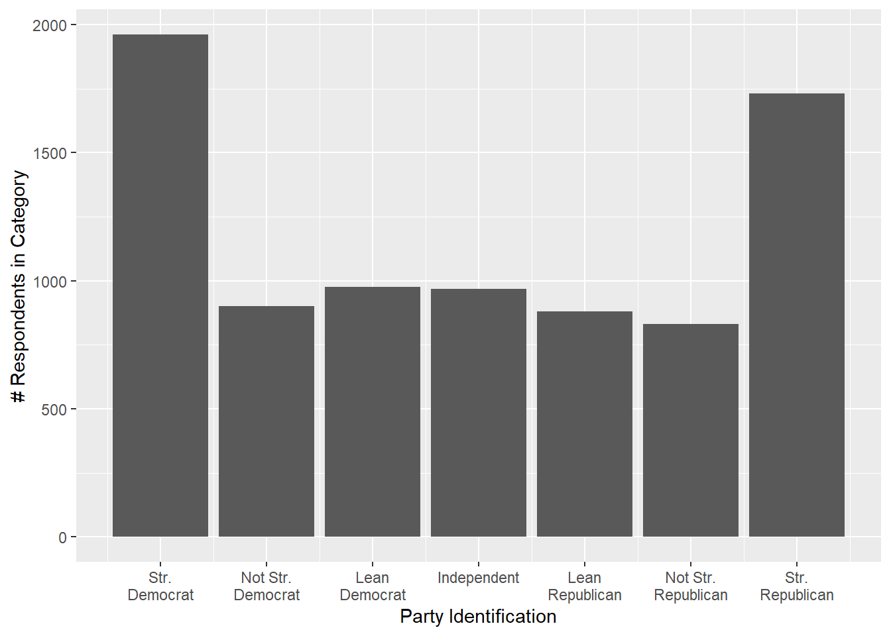
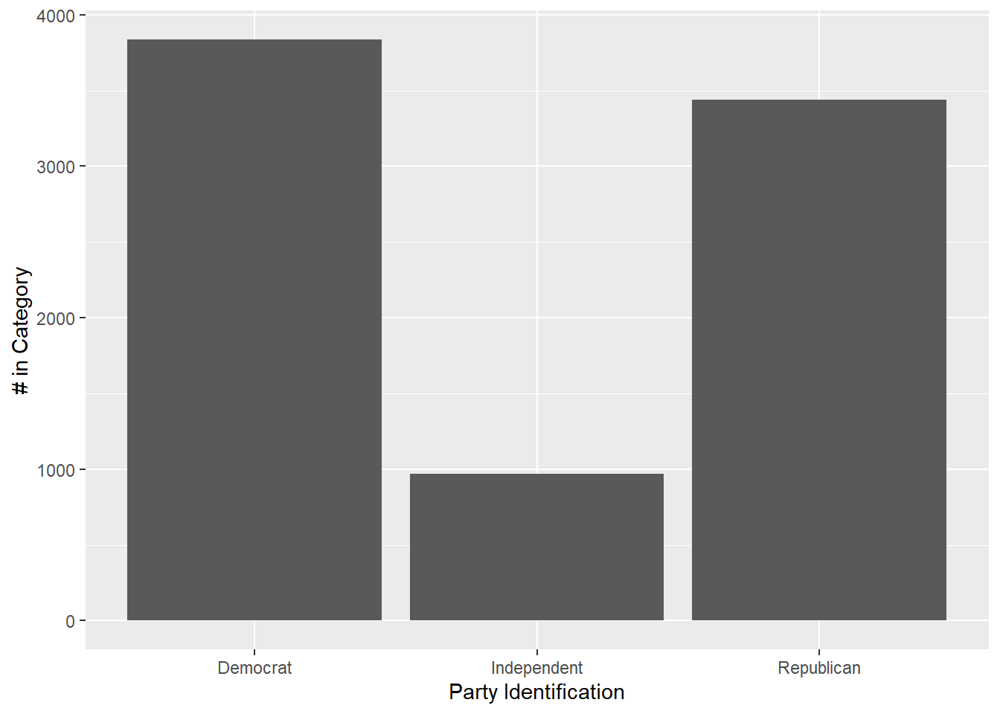
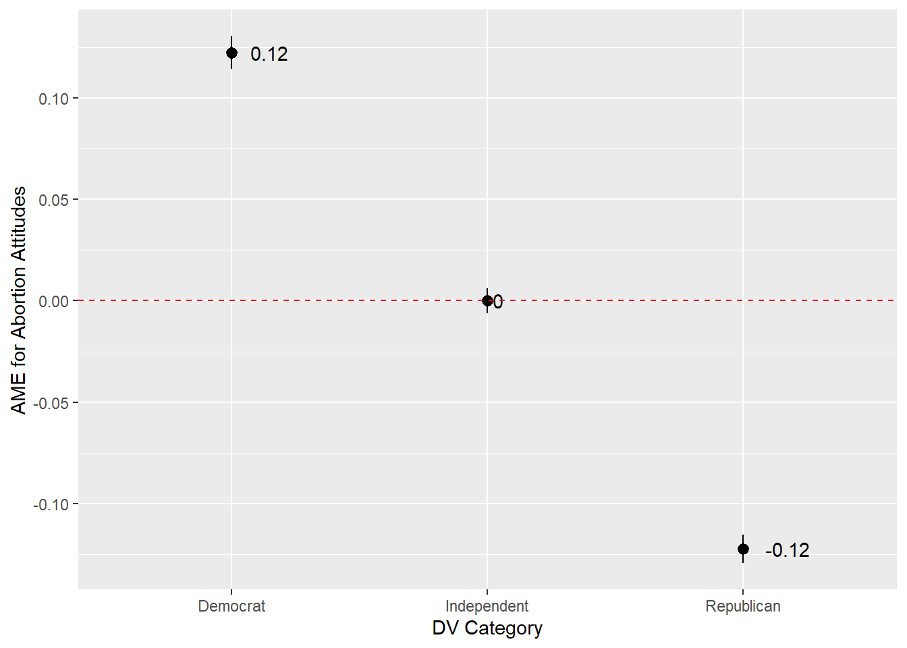

You learned how run linear (OLS) and (binomial) logistic regression models in Statistics II. These models are appropriate for continuous and binary dependent variables. However, it is possible that your research question will involve an unordered categorical dependent variable. A linear or logistic model will not cut it in that case. Instead, you can run a multinomial logistic model. The remainder of this chapter introduces an example problem, how to run and interpret such a model, and how to produce a regression table for such a model.
19.1 Example Question
Let’s start with an initial question: what predicts variation in a person’s partisan identification? I will use data from the 2020 American National Election Studies to consider this question. Respondents on this survey are asked two questions on this front with the nature of the second question depending on the answer to the first:
“Generally speaking, do you usually think of yourself as a Democrat, a Republican, an independent, or what?
[If answering Democrat or Republican on first question] Would you call yourself a strong [Democrat / Republican] or a not very strong [Democrat / Republican]?
[If answering something other than Democrat/Republican on the first question] Do you think of yourself as closer to the Republican Party or to the Democratic Party? (Response options: closer to Republican, closer to Democrat, Neither)
The final question here is important because many Americans who say they are Independent do indeed ‘lean’ toward one of the parties and, more or less, act like partisans when it comes time to vote or evaluate partisan politics. They are essentially “stealth” partisans and so we don’t want to just dump them into the “(pure) Independent” bucket.1
1 If they walk like a partisan and talk like a partisan, then why don’t they say they’re a partisan on the first question? For some this may reflect ambivalence about the party due to either current events indicating poor performance by the party or, perhaps, good performance by the other side. Lavine, Johnston, and Steenbergen provide a great account of how partisan ambivalence influences decision making. For others, meanwhile, this may occur because many people don’t like “partisans” - they think they’re conflict oriented weirdos and most normies would rather cut off their foot then have to spend one more minute talking about nasty ole politics with them. This leads some partisans to say they’re Independent. Klar and Krupnikov provide the definitive account here.
Most analyses of American politics that use these measures will use a 7-pt scale constructed from them arraying people from “Strong Democrat” to “Strong Republican”. Here is that the distribution of that variable looked like on the (raw, unweighted) 2020 ANES.
Removes 31 respondents who refused to answer and 4 who ultimately said don’t know. This is out of 8280 total respondents.
2
Calculates the number in each group of V201231x. A simpler version of summarize(varname = n()).
3
The \n stuff here tells ggplot to add a line break. I do this to avoid the labels overlapping with one another.

We might then model this variable using an OLS linear regression model. In so doing, we are assuming that this ordinal variable is interval/ratio in nature. This is a common assumption in this literature. Here, I’ll predict it using a person’s attitudes regarding abortion (1 = abortion should never be permitted … 4 = women should always be able to obtain an abortion), government spending (higher = government should spend more on services), education, whether someone in the household is a union member, sex, race-ethnicity, and age.
Show the code
# Some data cleaninganes <- anes |>mutate(abortion =ifelse(V201336 %in%c(-9,-8,5), NA, V201336),spending =ifelse(V201246 %in%c(-9, 99), NA, V201246), education =ifelse(V201511x <0, NA, V201511x), union =ifelse(V201544 <0, NA, V201544), union =factor(union, levels =c(2, 1), labels =c("Not a Union HH", "Union Household")), sex =ifelse(V201600 ==-9, NA, V201600), sex =factor(sex, levels =c(1, 2), labels =c("Male", "Female")), race_eth =ifelse(V201549x <0, NA, V201549x), race_eth =factor(race_eth, levels =c(1,2,3,4,5,6), labels =c("White", "Black", "Hispanic", "Asian", "Native American", "Multiple Races")), age =ifelse(V201507x ==-9, NA, V201507x), partyid =ifelse(V201231x %in%c(-9,-8), NA, V201231x))# Initial modelmodel_ols <-lm(partyid ~ abortion + spending + education + union + sex + race_eth + age, data = anes)summary(model_ols)
1
I need to convert respondents with missing value codes (e.g., -9, -8) or “Other” responses to NA. If I do not need to make any other change to the variable, then an ifelse() command is usually easiest. Here: if an observation has these values (-9, -8, 5) on the V201336 variable, convert them to NA; if some other value, give that observation whatever value it had on the V201336 variable.
Call:
lm(formula = partyid ~ abortion + spending + education + union +
sex + race_eth + age, data = anes)
Residuals:
Min 1Q Median 3Q Max
-5.8823 -1.2452 -0.0336 1.1839 6.0058
Coefficients:
Estimate Std. Error t value Pr(>|t|)
(Intercept) 9.527003 0.125924 75.657 < 2e-16 ***
abortion -0.711652 0.021640 -32.886 < 2e-16 ***
spending -0.512268 0.013366 -38.325 < 2e-16 ***
education -0.182575 0.019975 -9.140 < 2e-16 ***
unionUnion Household -0.218417 0.061601 -3.546 0.000394 ***
sexFemale -0.149999 0.043321 -3.462 0.000539 ***
race_ethBlack -1.176989 0.079908 -14.729 < 2e-16 ***
race_ethHispanic -0.532062 0.077450 -6.870 7.04e-12 ***
race_ethAsian -0.445115 0.119841 -3.714 0.000206 ***
race_ethNative American -0.141164 0.161144 -0.876 0.381056
race_ethMultiple Races -0.255277 0.118702 -2.151 0.031548 *
age -0.005102 0.001294 -3.943 8.12e-05 ***
---
Signif. codes: 0 '***' 0.001 '**' 0.01 '*' 0.05 '.' 0.1 ' ' 1
Residual standard error: 1.706 on 6374 degrees of freedom
(1894 observations deleted due to missingness)
Multiple R-squared: 0.4444, Adjusted R-squared: 0.4435
F-statistic: 463.5 on 11 and 6374 DF, p-value: < 2.2e-16
We can see that policy attitudes significantly and substantially predict this dependent variable. For instance, moving from 1 on the abortion scale (abortion should never be permitted) to 4 (abortion should always be possible if a woman wants one) is associated with a change of around 2 scale points on the 7-pt scale (more/less equivalent of moving from leaning toward the Republican party to leaning to the Democratic party).
abortion Estimate Std. Error z Pr(>|z|) S 2.5 % 97.5 % spending
1 5.42 0.0558 97.1 <0.001 Inf 5.31 5.53 4.59
2 4.71 0.0406 116.1 <0.001 Inf 4.63 4.79 4.59
3 4.00 0.0333 120.0 <0.001 Inf 3.93 4.06 4.59
4 3.29 0.0389 84.5 <0.001 Inf 3.21 3.36 4.59
education union sex race_eth age
3.45 Not a Union HH Female White 51.7
3.45 Not a Union HH Female White 51.7
3.45 Not a Union HH Female White 51.7
3.45 Not a Union HH Female White 51.7
Columns: rowid, estimate, std.error, statistic, p.value, s.value, conf.low, conf.high, spending, education, union, sex, race_eth, age, abortion, partyid
Type: response
The foregoing analyses use this variable on its original 7-pt scale. In so doing, we are examining both classification (is a person Democrat or Republican?) but also the strength of that identification (e.g., not strong, strong, lean). Perhaps we have a different RQ in mind or prefer a different way of analyzing this data that focuses simply on categorization: what predicts whether a person chooses “Republican” vs. “Democrat”, vs. “Independent” (regardless of whether they say “strong” or “not strong”)
Show the code
#Creating the 3-item categorical variableanes <- anes |>mutate(pid3 =case_when( partyid %in%c(1:3) ~"Democrat", partyid ==4~"Independent", partyid %in%c(5:7) ~"Republican"))# Plotanes |>group_by(pid3) |>tally() |>filter(!is.na(pid3)) |>ggplot(aes(x = pid3, y = n)) +geom_col() +labs(y ="# in Category", x ="Party Identification")

A linear model doesn’t quite make sense here since our data is now categorical. The type of logistic regression you learned in Statistics II also won’t work because that is a type of logistic model (a “binomial” logistic model) that is used for predicting binary data. We could theoretically dichotomous this variable and run that type of model. For instance, we could create a binary variable where 1 = Republican and 0 = Democrat or 1 = Democrat and 0 = Republican or Independent. This might make sense in some contexts. Perhaps we are studying vote choices in a multi-party context and we ultimately care about predicting whether a person votes for a party in government vs. some other party. Creating a dummy variable and running a binomial logistic model in that situation (e.g., 1 = vote for government party, 0 = vote for other party) would make sense. However, this only makes sense in relation to a particular RQ and hypothesis. What if our RQ/hypothesis implied a model predicting whether a person votes for a government party, a left-wing opposition party, or a right-wing opposition party? Dichotomization of the DV wouldn’t help us there.
19.2 Multinomial Logistic Model
You can think of a multinomial logistic model as a type of extension of the binomial logistic model you learned about in Statistics II but one that is used for predicting membership in a categorical variable with more than two unordered categories. In a multinomial logistic model, we will specify a particular category of the DV as our ‘reference category’ and then use a logistic model to model the chances of being in each of the other categories of the DV relative to the chances of being in the reference category. This is kind of similar to what we do with categorical IVs (pick a reference category and compare every other category to it) only with the categorical variable serving as the DV rather than an IV.
19.2.1 Running the Model
Multinomial logistic models are not natively supported in R, so we will need a library with a multinomial-logistic model function in order to run such a model. There are actually a few such libraries out there, but I will use the nnet package. One advantage of this particular package relative to alternatives (such as the mlogit package) is that does not require us to reshape our data (see Chapter 16).
# The relevant librarylibrary(nnet)# Re-Running our modelmodel_multinom <-multinom(pid3 ~ abortion + spending + education + union + sex + race_eth + age, data = anes)
# weights: 39 (24 variable)
initial value 7015.738075
iter 10 value 5033.809807
iter 20 value 4344.935414
iter 30 value 4109.995309
final value 4106.488373
converged
The code chunk above loads the nnet library and then runs our model. The model specification process is the same as with OLS models, etc., but now we use the multinom() function. An important note about the DV: I created the pid3 variable above as a character variable with three categories (“Democrat”, “Independent”, and “Republican”). The multinom command will work with this variable but it will automatically use the first alphabetical category as the reference group in the analysis. If I wanted to change this (e.g., use “Republican” or “Independent” as the reference category), I could convert this pid3 variable to a factor variable and specify the first level manually.
Our results look a little bit different, but are conveying the same basic information. We get one area for “Coefficients:”: this tells us the coefficient for each variable. We get another area for “Std. Errors” which gives the standard errors for each variable. There are two rows in each area meanwhile. This is because we are basically fitting two models: one model predicting whether a person is an Independent rather than a Democrat (the “Independent” row in each section) and another model predicting whether a person is a Republican rather than a Democrat (the “Republican” row).
These results are a bit hard to look at. Instead, we can use the parameters() function from the, uh, parameters package instead:2
2 We could also use the tidy() command from the broom package, but parameters() separates the two different models more clearly.
Uncertainty intervals (equal-tailed) and p-values (two-tailed) computed
using a Wald normal distribution approximation.
The model has a log- or logit-link. Consider using `exponentiate =
TRUE` to interpret coefficients as ratios.
Ah, that’s much better.
Let’s start with the first area: “Response level: independent”. The coefficients here tells about the log of the odds of being in the Independent category rather than the Democrat category. Positive values would thus indicate that a higher values on the IV are associated with an increased chance of saying one is an Independent rather than a Democrat while negative values imply the opposite. We can see that increasing left-wing abortion and spending attitudes are associated with a reduced chance of being an Independent and, concomitantly, an increased chance of being a Democrat. These relationships are statistically significant (p < 0.001). Native Americans, on the other hand, are more likely to say they are Independents rather than Democrats compared to White respondents(ref. category of the race/ethnicity IV) conditional on the other predictors in the model (b = 1.26, p < 0.001).
The second area focuses on “Response level: Republican”. The coefficients here tells about the log of the odds of being in the Republican category rather than the Democrat category. We get some similar patterns here, e.g., more liberal abortion attitudes are associated with a lower chance of being Republican and a higher chance of being Democrat. On the other hand, we see no difference between Native Americans and White respondents in being Republican rather than Democrat.
19.2.2 Predicted Values & AMEs
A multinomial logistic model is a logistic model. The coefficients are thus on a log of the odds scale. As such, they are only really useful to you in telling you, and the reader, about the direction of a relationship. If you want to know about substance, then you should use the predictions() command to calculate predicted probabilities and/or the slopes() command to estimate average marginal effects (with both commands coming from the marginaleffects package).
Let’s focus first on the abortion attitude measure, which has the following levels:3
3 Ignore the Refused, Don’t Know, and Other responses which I converted to NA before fitting the model. I have treated this variable as continuous, but there is a reasonable case for treating it as categorical/ordinal and converting it to a factor variable.
anes |>select(V201336) |> sjPlot::view_df()
Data frame: select(anes, V201336)
ID
Name
Label
Values
Value Labels
1
V201336
PRE: STD Abortion: self-placement
-9
-8
1
2
3
4
5
-9. Refused
-8. Don't know
1. By law, abortion should never be permitted
2. The law should permit abortion only in case of rape, incest, or when the woma
3. The law should permit abortion other than for rape/incest/danger to woman but
4. By law, a woman should always be able to obtain an abortion as a matter of pe
5. Other {SPECIFY}
Let’s take a look at the output of the predictions() command:
The “Group” (or, really group4) variable indicates the category of the DV that the prediction is for. The column for abortion then indicates what value of the abortion variable the prediction is for. We then get the predicted value (estimate) and associate uncertainty estimates (std.error, conf.low, etc.). Holding the other covariates constant at their mean/mode, the predicted probability of a person who thinks that abortion should never be permitted saying that they are a Democrat is 0.0986 [95% CI: 0.0814, 0.1157]. A person with this abortion attitude is also unlikely to say they are an Independent (predicted probability: 0.06) and very likely to say they are a Republican (predicted probability: 0.84). We can also see that the probability of saying “Democrat” increases as we move across the abortion scale, largely stays flat for saying one is an Independent, and decreases for saying one is a Republican.
4 You can see the real names for each category at the bottom of the output. This command produces gussied up output by default that capitalizes some names.
We can, of course, plot these values. Indeed, that would be a great way to communicate the results of this plot. The main complication is in figuring out how to plot the three categories of predicted values (predicted prob of being Democrat, Republican, Independent). We could do that in two basic ways as shown here: (1) we can map the group category indicator to an aesthetic (e.g., linetype or color) or (2) separate them into different facets.
#Map to an aestheticggplot(pred_multinom, aes(x = abortion, y = estimate, linetype = group)) +geom_line() +geom_ribbon(aes(ymin = conf.low, ymax = conf.high), alpha =0.2) +labs(y ="Predicted Probability", x ="Abortion Attitude", linetype ="DV Category")
I think the first example is the superior option here as it makes it very easy to compare predictions within abortion attitudes (e.g., probability Democrat if abortion = 1 vs. probability Republican if aboriton = 2). Here, we can see that abortion attitudes primarily differentiate Republicans from Democrats and don’t really seem to matter all that much for whether a person says they are an “Independent” or not. The second option might be more useful if there were more categories insofar as that made the single plot difficult to read/interpret.
We can also use the avg_slopes() command to get the average marginal effect of a variable as in this example:
# the slopesavg_slopes(model_multinom, variables ="abortion")
# plotting themavg_slopes(model_multinom, variables ="abortion") |>ggplot(aes(x = group, y = estimate)) +geom_pointrange(aes(ymin = conf.low, ymax = conf.high)) +geom_text(aes(label =round(estimate, 2)), hjust =-0.5) +geom_hline(yintercept =0, linetype ='dashed', color ='red') +labs(x ="DV Category", y ="AME for Abortion Attitudes")

The probability of being a Democrat is expected to increase by 0.12 probability points (12 percentage points) with each one unit increase in the abortion attitudes measure. One thing to note here: probabilities in an “event space” need to sum up to 1. The “event space” is the different categories we’re calculating probabilities for (e.g., Democrat, Independent, and Republican). In this instance, the +0.12 gain in the probability of being a Democrat is offset by a -0.12 loss in the probability of being a Republican. Per above, abortion attitudes are basically unrelated to being an “Independent”. In other contexts, we might see a +0.12 for group 1, -0.04 for group 2, and -0.08 for group 3.
19.2.3 Regression Table
Let’s create a regression table:
modelsummary(model_multinom)
Warning: There are duplicate term names in the table.
The `shape` argument of the `modelsummary` function can be used to print
related terms together. The `group_map` argument can be used to reorder,
subset, and rename group identifiers. See `?modelsummary` for details.
You can find the group identifier to use in the `shape` argument by
calling `get_estimates()` on one of your models. Candidates include:
response, s.value, group
tinytable_1fuhlze3nz96l7dbbrcw
(1)
(Intercept)
4.369
8.195
(0.267)
(0.325)
abortion
-0.453
-1.038
(0.038)
(0.049)
spending
-0.426
-0.820
(0.026)
(0.032)
education
-0.233
-0.442
(0.034)
(0.044)
unionUnion Household
-0.201
-0.279
(0.106)
(0.139)
sexFemale
-0.157
-0.224
(0.073)
(0.094)
race_ethBlack
-0.635
-2.115
(0.171)
(0.190)
race_ethHispanic
-0.867
0.009
(0.136)
(0.147)
race_ethAsian
-0.773
0.367
(0.211)
(0.218)
race_ethNative American
-0.128
1.263
(0.266)
(0.287)
race_ethMultiple Races
-0.477
0.333
(0.211)
(0.222)
age
-0.004
-0.014
(0.002)
(0.003)
Num.Obs.
6386
R2
0.488
R2 Adj.
0.488
AIC
8261.0
BIC
8423.3
RMSE
0.34
Oh boy. First, we get a warning message about duplicate terms. This is because each IV has two coefficients and standard errors associated with them: one for the Independent vs. Democrat model and one for the Republican vs. Democrat model. Second, modelsummary() has just dumped those values into the same area, yielding an impossible to understand table.
We can get around these issues by using the shape functionality in modelsummary() (see here).
modelsummary(model_multinom, stars = T, gof_map =c("nobs"), shape = model + term ~ response)
tinytable_nr6vxlfzuopu4u6oudju
Independent
Republican
+ p < 0.1, * p < 0.05, ** p < 0.01, *** p < 0.001
(1)
(Intercept)
4.369***
8.195***
(0.325)
(0.267)
abortion
-0.453***
-1.038***
(0.049)
(0.038)
spending
-0.426***
-0.820***
(0.032)
(0.026)
education
-0.442***
-0.233***
(0.044)
(0.034)
unionUnion Household
-0.279*
-0.201+
(0.139)
(0.106)
sexFemale
-0.157+
-0.224**
(0.094)
(0.073)
race_ethBlack
-0.635***
-2.115***
(0.171)
(0.190)
race_ethHispanic
0.009
-0.867***
(0.147)
(0.136)
race_ethAsian
0.367+
-0.773***
(0.218)
(0.211)
race_ethNative American
1.263***
-0.128
(0.266)
(0.287)
race_ethMultiple Races
0.333
-0.477*
(0.222)
(0.211)
age
-0.014***
-0.004*
(0.003)
(0.002)
shape = model + term ~ response
This can basically be kept the same for your examples. It is telling modelsummary() to plot the results of the different models in separate columns. response refers to the categories of the DV. We would naturally want to clean this table up a bit (e.g,. rename variables, etc.), but I leave that out here for simplicity sake.
There is one remaining annoyance: for some reason, modelsummary() is not printing the number of observations or goodness of fit statistics. It does this in the example given on the package’s webpage for the shape function as well. I have worked out some janky work around that mostly but doesn’t fully work, but, frankly, the simplest solution would be to save the table to Word document and then manually add additional values for the number of observations and the Nagelkerke R2:
# Number of observations = nobs# glance() is from the broom packageglance(model_multinom)
In which case we get a warning. The command won’t produce sensible output for this type of model. Instead, we can run a normal linear regression on the DV and calculate VIF from that. VIF, recall, is about the inter-correlation of the independent variables. In my example, my DV is a character variable, so I need to create a numeric version of the variable to use in this model:
anes <- anes |>mutate(pid3_numeric =case_when( pid3 =="Democrat"~1, pid3 =="Independent"~2, pid3 =="Republican"~3) )vif_model <-lm(pid3_numeric ~ abortion + spending + education + union + sex + race_eth + age, data = anes)car::vif(vif_model)
There are some other assumptions related to multinomial logistic models (see discussion here) but I wouldn’t expect you to investigate them (e.g., the IIA assumption) given that we’re already on somewhat advanced grounds.